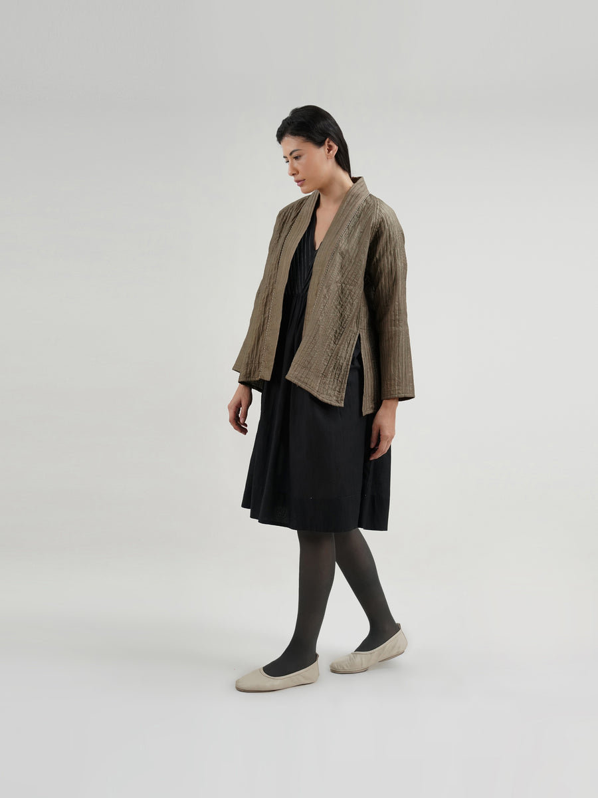
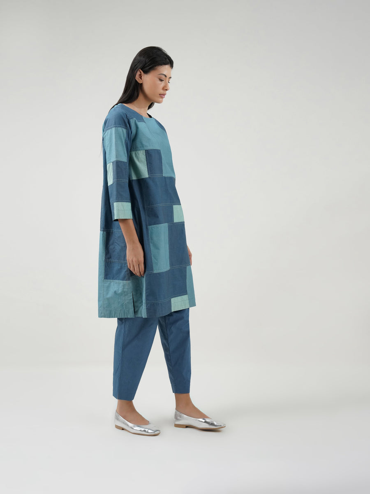

Spring — Made in New Delhi
The Collection
46 pieces
No pieces match that search.

iswas is a slow-fashion studio making Western womenswear in washed silks and hand-printed cottons — cut relaxed, built to be worn for years.